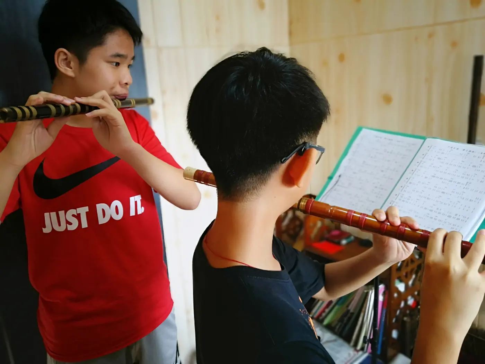
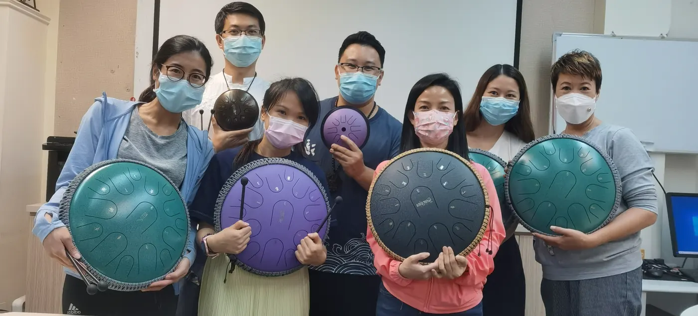

長笛課程
由第一個自然的音，走到有呼吸、有方向的旋律。
了解學習內容由樂器、程度和學習目標出發，了解課堂內容與練習需要。
由第一個自然的音，走到有呼吸、有方向的旋律。
了解學習內容
聽見竹聲的明亮，也學會其中的細節與分寸。
了解學習內容
從一道氣流開始，慢慢聽清一個音的來去。
了解學習內容
讓每一下敲擊有位置，讓聲音之間有回應。
了解學習內容先選擇想學的項目，看看可以從哪些練習開始。課堂安排會連同已有經驗、樂器狀況及可練習時間一起討論。
帶着學習目標查詢知道練哪一句、聽甚麼，以及做到甚麼便可以接下一步。每天的時間不長，也可以有具體方向。
錄十幾秒有代表性的片段，記下卡住的位置與試過的方法，讓下一堂課能接續處理。
興趣、考級與演出各有準備需要。按目前能力和生活安排，選擇合適的學習重點。
把想學的樂器、已有經驗及可上課時間告訴張老師，一起討論合適的學習安排。